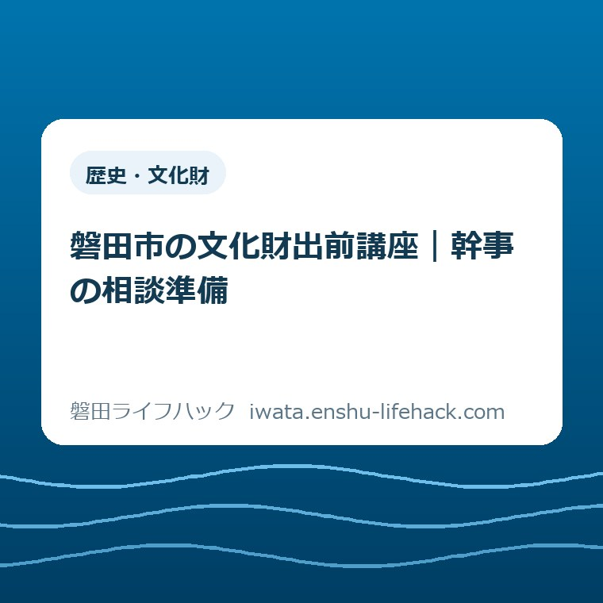

歴史・文化財
磐田市の文化財出前講座｜幹事の相談準備

この記事の要点
Q. 地域の学習会に歴史の講座を頼みたい。何から決めればいい？
A. 磐田市の文化財出前講座は団体向けで、講座対応は平日9〜17時です。実施の可否、日時、内容は個別条件で変わるため文化財課へ相談します。今日は希望テーマを一つ決めれば十分。会場や全員の日程を先に確定させず、希望と未定を分けて相談の準備をします。
幹事の相談準備は、全員の予定を揃える前から始められる
磐田市の文化財出前講座を頼めるかどうかは、団体や希望内容などの個別条件で変わります。地域の学習会を任された幹事は、講師探しだけをしているわけではありません。参加者への連絡、会場の空き確認、役員への説明。まだ開催が決まらない段階でも、すでに時間を使っています。
「皆さんの都合を聞いてから市へ電話しよう」と考えるのは自然です。ただ、全員の希望日が揃っても、講座の対応時間に合わなければ聞き直しになります。逆に、何も決まっていないと相談しにくい。その間で止まる幹事のために、この記事では相談前の整理に絞ります。
私は大石浩之（磐田市／不動産業）です。文化財の専門家として講座を評価するのではなく、暮らしの段取りから考えます。今日の作業は、聞きたいテーマを一つ決めることです。会場契約や参加者募集まで進める必要はありません。
以下の表とメモは、磐田市の申込様式ではありません。公式案内にある条件と、私が提案する準備を分けて書いています。完成した企画書が必要だと思い込まず、文化財課に何を相談したいのかが伝わる一枚を目指してください。
公式案内で確認できる対象・時間・相談先
磐田市が2026年9月1日に発行した「いわた文化財だより」第258号4頁には、団体を対象とする出前講座の受付案内があります。学校のクラスや学年、地域のシニアクラブ、学習グループなどが例示されています。本記事の原文確認日は2026年9月23日です。
| 項目 | 公式案内の内容 |
|---|---|
| 対象 | 学校、地域のシニアクラブ、学習グループなどの団体 |
| 講座対応時間 | 平日の9時〜17時 |
| 調整すること | 日時と内容は、必ず文化財課に相談 |
| 申込み・問い合わせ | 文化財課 電話0538-32-9699 |
| 注意 | 個人的な依頼など、条件を満たさない場合は断られることもある |
講座の内容例には、住んでいる地域の歴史、旧石器時代から順にたどる磐田の歴史、遠江国分寺での現地解説が挙げられています。埋蔵文化財センター、旧見付学校、旧赤松家記念館についても、団体の見学と解説の相談を受けると記されています。
意外なのは、会議室に講師を呼ぶ形だけでなく、現地で解説を聞く形も相談例に入っていることです。ただし、掲載された例を希望どおりに予約できるという意味ではありません。室内の講座にするか、施設や史跡で話を聞くかも、日時と合わせて相談する内容です。
同じ市の「指定文化財と文化財の普及啓発」ページでは、文化財課職員が資料を持参して訪問博物館や歴史講座を行うと案内しています。9月号だけの催しと決めつけず、団体の学習について相談する窓口として読むのが適切です。第258号には、新設した講座との記載はありません。
時間の読み分けにも注意が要ります。市の同ページにある文化財課の受付時間は8時30分〜17時15分です。一方、第258号の講座対応時間は平日9時〜17時。窓口に連絡できる時間と、講座を実施する時間は別です。夕方の電話が可能でも、夜間の開催まで可能とは読み取れません。
第258号4頁には、最低人数、申込期限、講座時間の長さ、費用の具体額は示されていません。私は「書いていないから無料」「少人数でも必ず大丈夫」とは案内できません。必要書類や申込方法の詳細も含め、希望に対して何が必要かを文化財課に確認する事項として残します。

希望テーマは、歴史の知識より「何を知りたいか」で選ぶ
文化財出前講座の希望テーマは、専門用語で仕上げる必要はないと私は考えます。「住んでいる地区がどう変わってきたかを知りたい」のように、参加者が持ち帰りたい問いを一つ書く。それなら講座名を考える前に、文化財課へ相談する目的を伝えられます。
例えば、地域の学習グループなら「近所の地名と昔の暮らしのつながりを聞きたい」。シニアクラブなら「自分たちが知る景色より前の地域の姿を知りたい」。これは私が考えた相談文の例で、実施が決まっている講座メニューではありません。対応できるかは個別相談です。
学校の学習なら、学年と授業で扱う範囲を添えると、相談したい内容が具体的になります。例えば「磐田の歴史を時代順に知りたいが、児童が初めて聞く内容として相談したい」という書き方です。授業への適合や内容の難しさを幹事だけで判定せず、希望として伝える形にします。
テーマが広すぎると感じたら、「場所」「時代」「暮らし」のうち一つを入口にするのが私の提案です。見付の建物を入口にするのか、古墳を入口にするのか、昔の生活道具を入口にするのか。三つ全部を一度に頼まず、参加者が最初に聞きたいものを一つ選びます。
古墳を題材にしたい場合は、当サイトの兜塚古墳出土資料の記事を、問いを考える材料にできます。ただし、記事で紹介した題材を文化財課がそのまま出前講座で扱うとは限りません。「この資料に関心がある」と伝えるための下読みです。
詳しい予習を全員に求めると、講座を頼む前の負担が増えます。幹事が調べものをする場合も、まず一つの疑問を見つければ十分です。資料を探す場所の選び方は磐田市の図書館6施設の記事に整理しています。図書館へ行くこと自体を申込みの前提にはしません。
相談メモは「希望」「未定」「確認したいこと」を分ける
磐田市の文化財出前講座を相談するとき、幹事が使うメモには確定情報と希望を分けて書くのが私の提案です。希望日が決定日として伝わったり、仮の人数が最終人数として扱われたりすると、団体内の説明をやり直す原因になります。正確さは、空欄をなくすこととは違います。
| メモ欄 | 書き方の例 |
|---|---|
| 団体と参加者 | 地域の学習グループ／対象となる年代／人数は見込みか確定か |
| 希望テーマ | 住んでいる地域の歴史について知りたい |
| 日程 | 平日の日中を希望／候補日は未定／固定の定例日があれば記載 |
| 会場・形式 | 室内講座か現地解説か／会場名と場所／予約前か予約済みか |
| 確認事項 | 費用、人数条件、申込期限、必要な手続き、設備と資料の準備 |
| 連絡役 | 文化財課と連絡する幹事／団体内で決定する人 |
日程欄は、平日9時〜17時の枠に入るかを最初に見ます。「午後ならいつでも」とだけ書くと、片付けを含めて何時まで使えるのかが分かりません。相談時には希望する開始時刻と終了時刻を区別し、講座の長さを調整できるかも伝えます。時間数は市の指定として勝手に置きません。
候補日を出す場合、人数を確定するための出欠調査と、講師の日程を探るための仮調整は分けます。団体への連絡には「開催は未定」「講師との相談用の候補」と添える方法があります。幹事の中だけで仮だと思っていても、受け取った人は決定だと思うことがあるからです。
会場については、所在地と利用できる時間が分かると相談しやすくなります。机や椅子、投影設備、電源、資料の配布などは、希望する講座によって必要性が変わります。機材を借りたり資料を印刷したりする前に、主催側と文化財課側のどちらが用意するかを確認する欄を設けます。
現地解説を希望するなら、集合場所までの移動と立って話を聞く時間も検討対象になります。参加者が歩ける距離や休憩の希望は、診断名などの私的な情報を集めなくても相談できます。「座って聞ける形を希望」「移動区間を短くしたい」と、必要な配慮を具体的に伝える方法です。
旧見付学校での見学を考える団体は、講座相談とは別に、車の台数と集合方法も検討することになります。旧見付学校の駐車場と見学順の記事は移動の準備に使えます。一般の見学案内を読んだだけで、団体の駐車場所や解説枠を確保できたことにはしないでください。
費用は、講座そのものの負担と、会場代や移動費など団体側の支出を分けて質問するのが私の提案です。講師に関する条件が確認できても、会場の予約条件まで同時に決まるわけではありません。支払いが発生する予約を先に済ませるかは、変更時の扱いを把握してから判断します。

良い点——地域の疑問から講座を相談できる
磐田市の文化財出前講座で私が良いと考えるのは、地域の歴史を知りたいという身近な疑問が相談の入口になっている点です。歴史に詳しい人だけが企画を完成させてから頼む形だと、幹事になる人が限られます。自分たちの地域を知りたいという目的なら、参加者の関心を言葉にしやすくなります。
文化財課職員が講師となり、資料を持参するという市の案内もあります。
私は、学習会の主催者が講師探しと資料集めを一から別々に進めずに済む相談先があることを評価します。ただし、どんな資料が使われるかは今回の希望内容次第です。実物資料に触れられるなどの期待は先に広めません。
施設見学の相談もできる点は、参加者の学び方を選ぶ材料になります。話を聞くことを中心にしたい団体もあれば、建物や展示を見ながら質問したい団体もあるはずです。私は「出前」という言葉だけで室内に限定せず、希望する学び方を相談できることに意味があると考えます。
受付案内に対象や対応時間、断る場合があることまで書かれているのも、事前調整の材料です。私は、何でも引き受けられるように見せる案内より、条件が分かる案内のほうが予定を組みやすいと考えます。幹事側が条件を知っていれば、参加者に約束する範囲も絞れます。
注文したい点——相談前に抱え込む仕事を減らしたい
文化財出前講座の案内について私が注文したいのは、最初の相談で分かっていると助かる項目を、一枚に示してほしいという点です。第258号4頁には日時と内容の相談が必要だとあります。一方で、人数や会場が未定の段階を幹事がどう伝えればよいかまでは読み取れません。
私は、すべての条件を一律に決めてほしいわけではありません。学校とシニアクラブでは内容も時間も違います。だからこそ「ここは希望でよい」「ここは実施判断に必要」という区別が見えると助かります。問い合わせる前の迷いを減らすための、案内の書き方への要望です。
料金や人数など、今回確認した資料だけでは分からない点もあります。分からない項目を幹事が推測して役員会へ報告すると、その推測を後から訂正する仕事が増えます。私は、未確認の条件を埋めた立派な企画書より、確認待ちが見える短いメモのほうが実用的だと考えます。
この要望は、文化財課の職員個人に向けた批判ではありません。問い合わせを受ける側も、団体の目的と条件が分からなければ調整できません。幹事が希望を整理し、市の案内が確認項目を示す。その両方で、聞き直しの往復を減らす余地があるという私の意見です。
対案・結論——今日は希望テーマを一つだけ書く
磐田市の文化財出前講座に向けた今日の一歩は、「参加者に何を知って帰ってほしいか」を一文にすることです。人数、日程、会場を同時に完成させる作業にはしません。例えば「自分たちの住む地区の歴史を知りたい」と書けたら、相談準備の芯ができます。
文化財課へ相談する段階では、こんな伝え方ができます。「地域の学習グループで、地区の歴史を学ぶ講座を検討しています。希望テーマはこれです。日程と会場は未定ですが、実施条件と申込みまでに必要なことを教えてください」。これは筆者の文例で、市が定める申込文ではありません。
相談の返答を受けたら、確認できた条件、まだ調整中の事項、次に連絡する人を分けて記録します。電話した日も残すと、役員会へ共有するときに確認の時点が分かります。「相談した」と「開催が決まった」は別です。日時と内容の合意がないうちに、参加者へ確定案内を出さないことを勧めます。
希望が合わない場合は、無理に当初の日程へ押し込まず、何が調整できるのかを団体で考えることになります。テーマを狭める、開催時期を見直す、見学の形を相談するなど、選択肢の可否は文化財課に確認します。個人の依頼を団体名義に置き換えればよいという話ではありません。
大石の視点——善意の幹事にも、使える時間の限りがある
磐田市で学習会を支える幹事の仕事は、連絡を一本入れれば終わるものではないと私は考えます。これは私の出前講座申込みの体験談ではなく、段取りに対する意見です。人を集めるには、返事を待ち、条件を比べ、決まったことを伝え直す時間がかかります。
幹事の仕事を、善意だからという理由で無限に増やしてはいけない。私はそう考えます。良い学習会を開きたい気持ちと、幹事が全部を先回りして背負うことは同じではありません。何を知りたいかを一つ決め、分からない条件を相談に戻す。その線を引くことも、地域の活動を続けるための仕事です。
正直に言えば、テーマと日程のどちらを先にするかは迷います。定例会の日が固定されている団体なら、動かせない日程を最初に伝えるほうが合理的です。全員に同じ順序を押しつけるつもりはありません。ただ、日程がまだ白紙なら、希望テーマを一つにするほうが今日の手を動かしやすいと判断しました。
不動産の話でも、希望と確定条件を混ぜると判断が難しくなります。学習会の企画も、決まったことだけを大きく見せる必要はありません。未定を未定と書ける幹事のメモを、私は頼りないとは思いません。相談相手と一緒に決める余地を、正しく残しているからです。
FAQ——文化財出前講座の申込み前によく迷うこと
磐田市の文化財出前講座について、2026年9月23日に確認した公式案内を基に回答します。ここで分かるのは相談の入口です。団体ごとの実施可否や具体的な条件は、文化財課の回答を受けて確認してください。
個人でも申し込めますか？
磐田市の文化財出前講座は、学校、地域のシニアクラブ、学習グループなど団体向けです。第258号は、個人的な依頼など条件を満たさない場合は断ることもあるとしています。友人同士の集まりなどが対象に当たるかも、名称だけで自己判断せず、活動内容を文化財課に伝えて確認してください。最低人数は同号4頁には示されていません。
土日や夜間の学習会にも来てもらえますか？
第258号が示す講座対応時間は平日9時〜17時です。土日や夜間に来てもらえるとは案内できません。文化財課の窓口受付時間とも異なるため、電話がつながる時間を開催可能時間と読み替えないでください。定例会の日程が固定されている団体は、その条件を先に伝え、実施の可否を文化財課に確認してください。
申し込む前に何を揃えればよいですか？
まず希望テーマを一つ決め、団体の概要、人数の見込み、希望日時、会場の状況を分かる範囲で整理するのが筆者の提案です。市の必須書類一覧ではありません。未定の項目は未定と書き、費用、申込期限、人数条件、正式な手続きを文化財課へ確認します。第258号の申込み・問い合わせ先は電話0538-32-9699です。
今日は希望テーマを一つ書くところまでで十分です。制度や受付条件は変更される場合があります。申込みの最終判断は、下記の磐田市公式ページと文化財課で確認してください。
参考にした公式情報
- いわた文化財だより第258号（2026年9月1日発行）4頁／磐田市（2026年9月23日確認）
- 指定文化財と文化財の普及啓発／磐田市（2026年9月23日確認）

最終確認日：2026-09-23 ／ 本記事は公表情報と執筆者の見解を分けて記載しています。制度・数値・公開状況は変更される場合があるため、最新情報は磐田市公式ページでご確認ください。